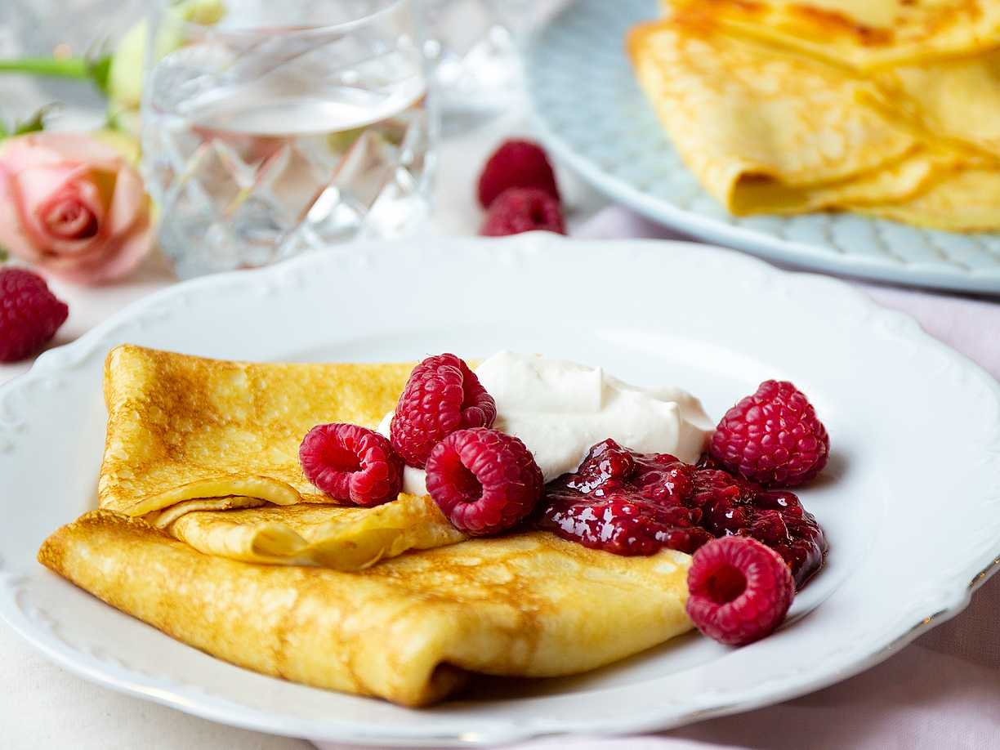

Pannkakor - grundsmet
Gör traditionella tunna pannkakor genom att blanda mjöl, mjölk och ägg och lite salt till en jämn smet.
Gör så här

Länk till Ica's recept! La till för att du ville ha 4 länkar :D La till för att du ville ha 4 länkar :D La till för att du ville ha 4 länkar :D
Gör så här
Blanda mjöl och salt i en bunke. Vispa i hälften av mjölken och vispa till en slät smet. Vispa i resten av mjölken och äggen.
Stek tunna pannkakor i lite smör, för varje pannkaka, i en stek- eller pannkakspanna.
Servera med sylt, gärdde, glass, bär eller frukt.
Ingredienser
2 1/2 dl vetemjöl
1/2 tsk salt
6 dl mjölk
3 ägg
smör (till stekning)
sylt, gärdde, glass, bär eller frukt till servering.
Your browser does not support the audio element.
Till youtube!